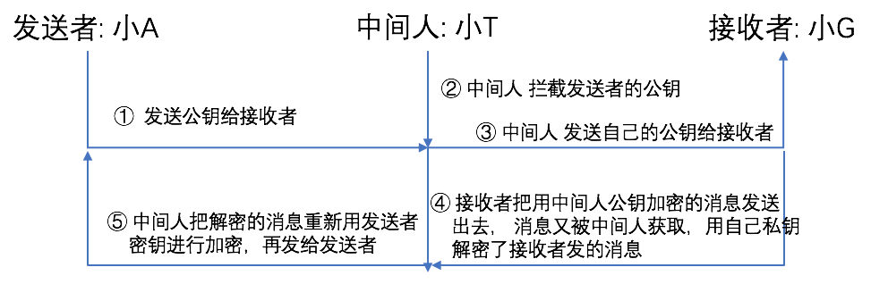
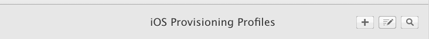

0x01 前言
我们知道，数据如果是明文传递很容易被“窃听者”窃听，所以为了应对这种问题，我们通常会对数据进行加密。
加密对数据的安全作用完全不可或缺。接下来我们将从简至繁，了解加密的过程。
0x02 对称加密
在对称加密中，加密者和解密者都是使用同一个密钥。
常见的对称加密有如下几种：
DES
DES是一种将64位明文加密成64位密文的对称密码算法，密钥长度是56位。规格上来说，密钥长度是64位，但每隔7位会设置一个用于错误检查的位，因此密钥实际长度为56位。
由于每次只能加密64位数据，所以遇到比较大的数据，需要对DES加密进行反复。比如说要加密128位数据，首先先加密前64位，再对后64位进行加密。如果是更大的数据，以此类推。
由于目前已经可以短时间内被破解，所以不建议使用。
3DES
DES-EDE3，将DES重复3次所得到的一种密码算法，3次所使用的密钥都是不同的，也叫三重DES算法。缺点是处理速度不高，安全性也不足够高。
AES
取代DES成为新标准的一种对称密码算法。AES的密码长度有128、192、256位三种，在2000年时，Rijindael算法作为AES的实现。目前，AES已经逐步取代DES、3DES成为首选的对称密码算法。加密后文件大小翻倍，同样的，解密的时间要慢于加密的时间。
但是，在使用对称加密的时候会遇到密钥配送问题。我们说过对称加密使用的是同一个密钥进行加解密，那么加密者肯定需要将密钥发送给接收者，而这发送密钥的过程中，窃听者是可以窃取这个密钥的，这就是密钥配送问题。
解决密钥配送问题，一般有以下几种方案：
事先约定好密钥
密钥分配中心
Diffie-Hellman密钥交换，这是一种密钥交换方法
非对称加密
0x03 非对称加密
非对称加密中，密钥分为加密密钥和解密密钥两种不同的密钥。非对称加密，也称公钥密码。
一般加密密钥是公开的，因此该密钥也称公钥；由消息接收者自己保管的解密密钥不能公开，一次该密钥也称私钥。
公钥和私钥是一一对应的，是不能单独生成的，一对公钥和密钥称为密钥对。由公钥加密的密文，必须使用与该公钥所对应的私钥才能解密；由私钥加密的密文，必须使用与该私钥所对应的公钥才能解密。
为什么说非对称加密很好的解决了对称加密的密钥配送问题？这是因为由消息的接收者生成一对公钥和私钥，然后将公钥发给消息的发送者，最后消息的发送者进行加密，这样消息的接收者就可以用私钥进行解密，得到明文信息，如下图所示。
目前使用自多的非对称加密是RSA。RSA原理可以参考原理1、原理2。
当然，非对称加密也不是完美的，对于数据比较大的来说，其效率会比较低，其解密所需时间大大慢于加密时间，那有没有又安全而且效率又高的方法呢？
0x04 混合密码
通过对称加密和非对称加密的结合，我们可以解决对称加密的密钥配送问题和非对称加密的解密效率慢的问题。https运用的其实就是这个混合加密技术。
加密的过程如下：
- 消息接收者生成一对公钥和私钥
- 消息接收者将公钥发送给消息发送者
- 消息发送者随机生成一个对称加密的密钥
- 消息发送者用密钥加密消息
- 消息发送者用公钥对密钥进行加密
- 消息发送者将加密消息和加密了的密钥发送给消息接收者
- 消息接收者用私钥解密加密了的密钥
- 消息接收者用密钥解密消息
0x05 单向散列函数
单向散列函数，可以根据消息内容计算出散列值，散列值的长度和消息的长度无关，无论消息是1bit、1M、1G，计算出的散列值都是固定长度的。
也被称为消息摘要函数或哈希函数。输出的散列值，也被称为消息摘要或指纹。
单向散列函数具有以下特点：
- 根据任意长度的消息，计算出固定长度的散列值
- 计算速度快
- 数据哪怕只有一点点不同，计算出的散列值也都不一样
- 具备单向性
常见的单向散列函数：
MD4、MD5
产生128bit的散列值，目前已经不安全
SHA-1
产生160bit的散列值，目前已经不安全
SHA-2
SHA-256、SHA-384、SHA-512，散列值长度分别是256bit、384bit、512bit
SHA-3
最新标准
采用单向散列函数，是为了防止数据被篡改。比如我们下载软件的时候，厂家都会提供一个MD5值，我们下载软件后，计算出MD5值，来比对两个值是否一样来判断下载的软件有没有被改过。同样的应用场景还有app的登录口令加密，我们的用户密码不会明文进行传递的。
0x06 数字签名
前面我们已经可以通过单向散列函数来判断消息是否被篡改过，但还是一种情况？如何证明消息是对方本人发的，因为在前面非对称加密中我们提到消息接收者者将公钥发送出去，这样就导致任何发送者都可以拿来加密，对方可以被伪装、篡改或对方否认是自己发的等。
要证明消息是消息发送者发的，其实很简单，我们把过程反过来，用消息发送者的私钥进行加密，因为私钥是消息发送者本人持有的，再加上单向散列函数的过程就是数字签名过程，具体流程如下图：

所以，整个数字签名流程里我们可以了解到：
确保了消息的完整性
知道消息是否被篡改了
防止别人否认
但是，我们知道数字签名的流程前提是公钥是得属于真正的发送者，但是如果遇到中间人攻击，数字签名将会失效，那么什么是中间人攻击呢？

这样公钥是不是发送者本人的不能保证了，那么这个又该如何解决？
0x07 证书
为了解决中间人攻击这样的问题，我们需要一个权威组织或受信任的个人给自己的公钥加上数字签名，来确保公钥不会被替换。我们前面说过数字签名可以确保数据完整性，加上是受信任的组织给签上的数字签名，所以只要拿着受信任组织的公钥去解密这个数字签名，验证完整性就能确保拿到的对方的公钥是没被替换过的。
密码学中的证书叫做公钥证书，里面包含姓名、邮箱、本人公钥等个人信息。然后由认证机构施加数字签名。
CA就是这样能够证明“公钥是本人”的权威组织或个人。其作用如下：
0x08 iOS签名
iOS签名的作用就是保证安装到用户手机上的app都是经过官方允许的。那么，我们的签名是如何被加上的呢？这就需要结合上面我们看到的知识。
首先，我们要生成Mac上的公钥和私钥，请求完成后会得到一个CertificateSigningRequest.certSigningRequest这样的文件。
然后，我们需要获得由苹果的私钥来给前面生成的Mac上的公钥进行签名后的证书，通过这些会生成开发者或者发布的cer证书，这些证书文件名是cer结尾的。
最后，需要生成mobileprovision描述文件，里面包含之前生成的的证书外，还包括设备信息、apple id、app权限等信息。
生成的入口如下，具体生成步骤不详细表述。

签名流程
所有的证书生成完毕后，具体的签名步骤是什么样的呢？iOS签名具体流程如下：